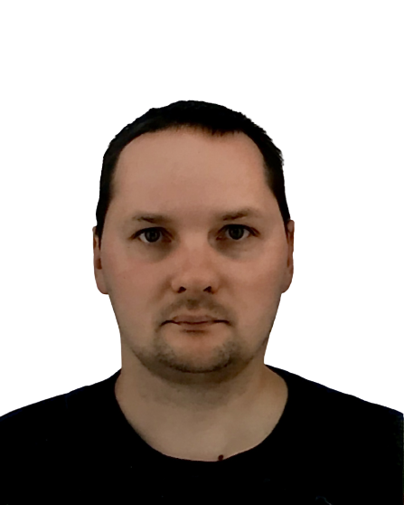

|  |
Martins Aleksejevs |
Looking for a job in the field of IT with the opportunity to use and apply my programming knowledge. Especially Ruby, and IoT sphere.
| Educational institution | From | To | Obtained diploma |
|---|---|---|---|
| Riga Technical University | 2003 | 2006 | Bachelor's Degree in Electrical Sciences |
| Riga Technical University | 2006 | 2009 | Master's Degree in Electrical Sciences |
| Workplace | From | To | Description of work duties to be performed |
|---|---|---|---|
| Riga Technical University | 2004 | 2005 | Low voltage network installation. Installation and configuration of security panels (Paradox, DSC). Instaling of telephony networks. Installation of TV networks. Server room equipment and relocation works. Cable sewerage installation work. laying cables in cable ducts. Establishment and maintenance of structured data networks. |
| Small private companies | 2005 | 2007 | Fire alarm installation and maintenance. Security alarm installation and maintenance. Installation and maintenance of video and audio surveillance systems. |
| SIA Lattelecom (TET) | 2007 | 2013 | Customer line engineer |
| SIA Fima | 2013 | 2020 | Engineer, Network Engineer, Solution Engineer Design of structured cabling networks. Preparation and implementation of notification solutions. Network equipment design solution export - import. (Extreme Network, Cisco, Avaya Mikrotik and others.). Implementation and maintenance of various solutions. Linux server maintenance and installation. Creation, implementation and maintenance of virtual platforms (VMWare, LinuxKVM, Nutanix, etc.). Internal equipment, server maintenance monitoring (Cacti). Ticketing system maintenance (OTRSv4) |
Server systems
Virtualization platforms